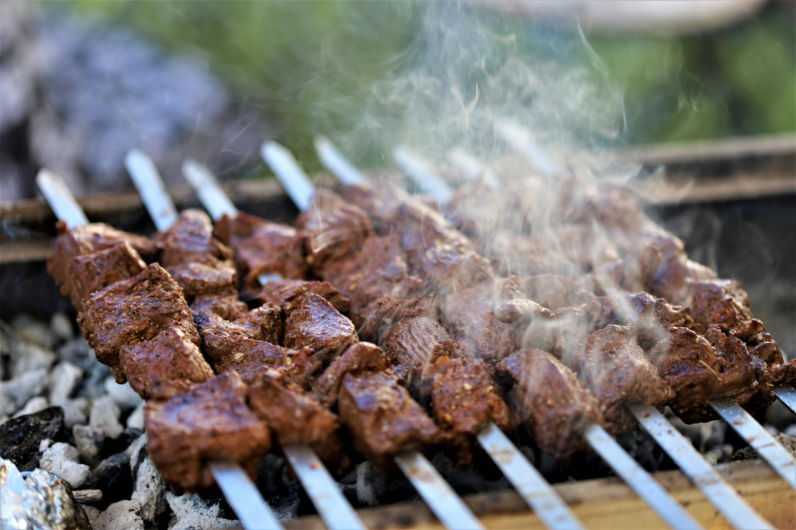

Kebab is loved by all Turks around the world. Eating kebab is like a culture. Everybody knows and loves it
Kebab is Turkish food mainly cooked on a mangal which is a Turkish barbecue. There are many different kinds of kebab. Chicken meat and other kinds of meat are mainly used for it. It is preferred to add normal levels of spices into it. Also, kebab is an important part of Turkish picnics.